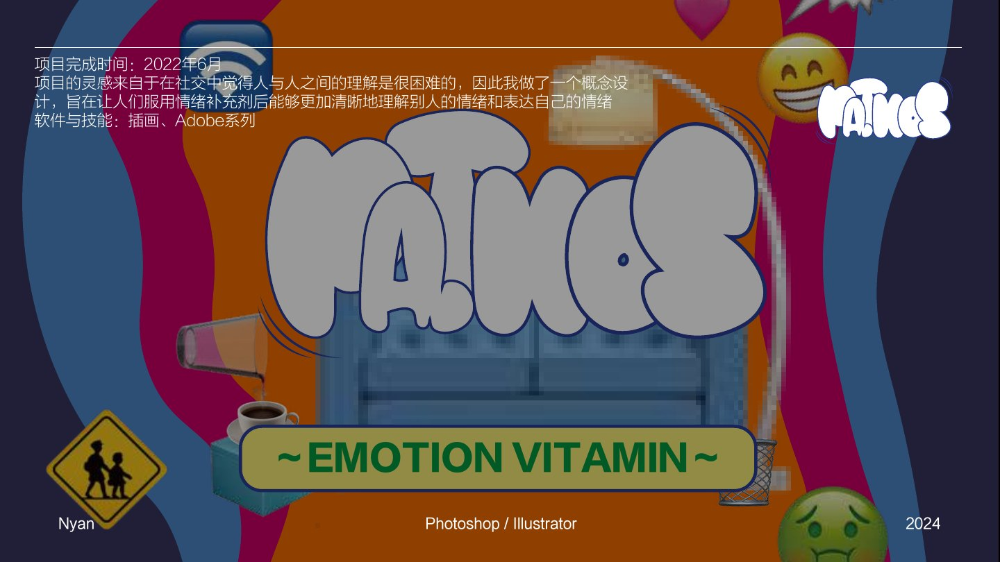
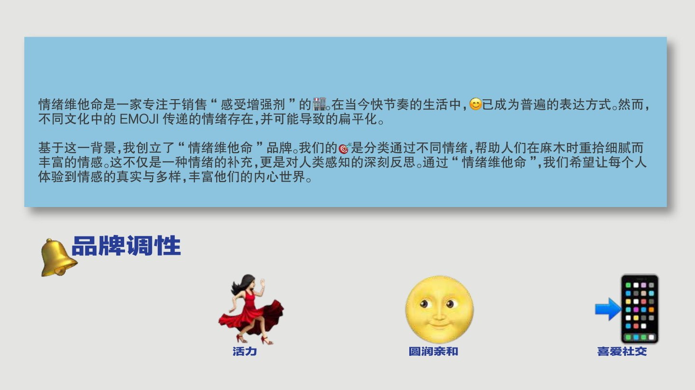
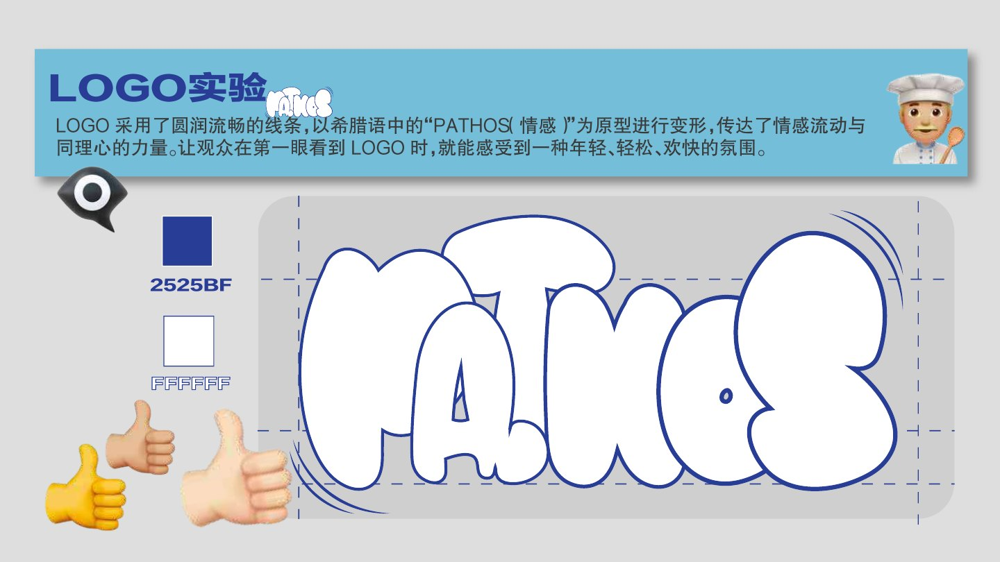
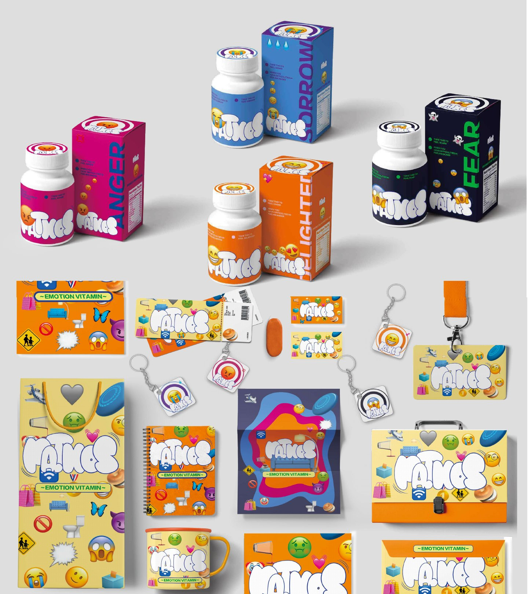

NÝAN.ARCHIVE / ARTIFACT / 2024
BRAND IDENTITY · PACKAGING
PATHOS情绪维他命
情绪不是需要被隐藏的问题，而是一种可以被看见、被命名、被补充的日常营养。
- DISCIPLINE
- 品牌策略 / 视觉识别 / 包装
- TOOLS
- Photoshop / Illustrator / AI
- FOCUS
- 将抽象感受转译为可分享的物件

PROJECT NOTE
PATHOS 把难以描述的感受变成一组可以选择、携带和赠予的视觉剂量。鲜明色彩与柔软语言，让“情绪”从负担变成一种被照顾的状态。



把抽象的情绪，变成可以拿在手中、分享给别人的视觉语言。